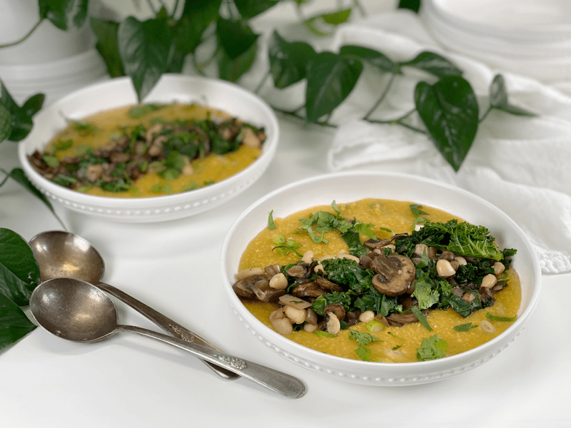
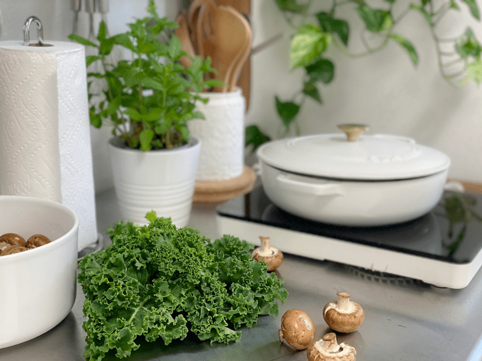
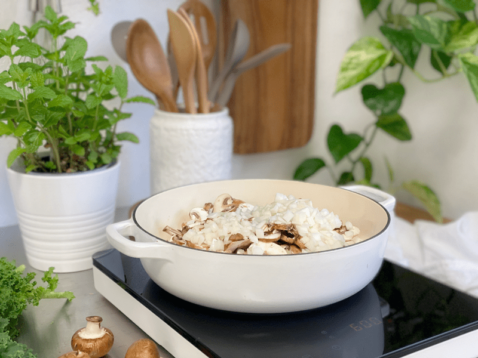
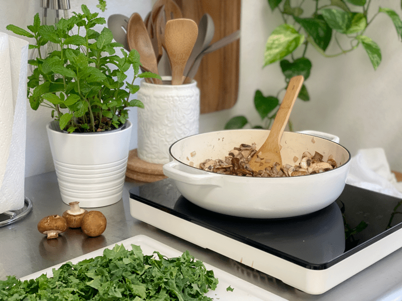
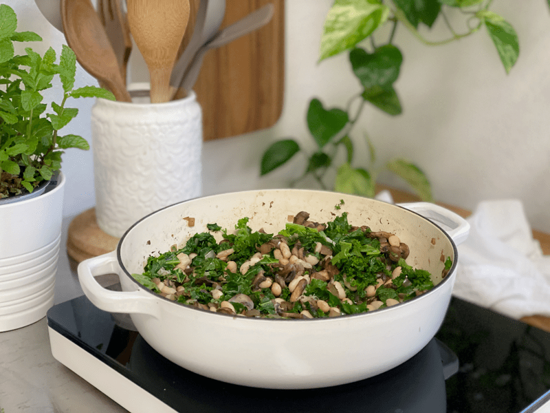
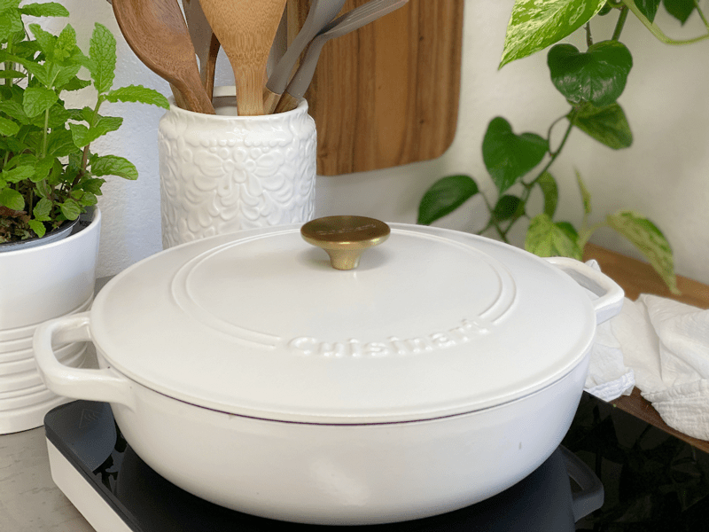
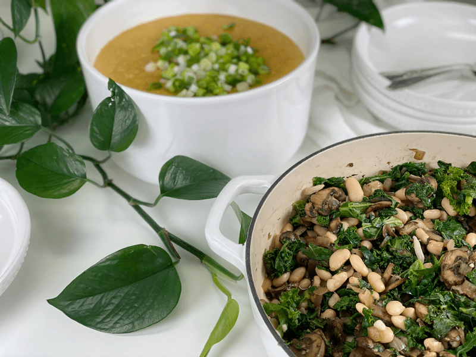

Cheesy Vegan Polenta with Mushrooms and Wilted Kale | Oil-Free
When Bob and I sat down to enjoy a bowl of this Cheesy Vegan Polenta with Mushrooms and Wilted Kale, we were taken aback by all the layers of flavor and texture. The polenta coated our mouths with a rich, creamy umami (a pleasant savory taste). We can thank the vegetable broth, nutritional yeast, and kombu seaweed for that. The sautéed mushrooms had a meaty, toothsome texture; the beans gave a subtle pop of creaminess against the earthy, gentle tenderness of the kale. It was a pure culinary delight.

Now, I must quickly disclose that this dish creates a meal that can feed a good-sized family, or it can be enjoyed as leftovers for a few days. It just depends on your household. You can also batch freeze the two components separately to enjoy at a later date. And you can always reduce the measurements by half to make a smaller portion. My past-life army cook must have taken over when I made this. My theory is that when we make good, delicious, and nutritious foods, we welcome leftovers! Can I get an “Amen!” Please take a few moments to read through my tips and tricks, so you know what to expect through the cooking process.
Cooking Mushrooms Tips & Tricks
Mushroom Prep
- If you have a food budget, use cremini mushrooms.
- Before sautéing the mushrooms, clean off any excess dirt. Contrary to what most people think, it’s okay to rinse mushrooms with water in a colander; don’t soak them, or they’ll absorb too much water. Dry them with paper towels and wipe off any stubborn dirt (put your active meditation hat on).
- If the stems of the mushrooms seem dry, hard, or slimy, trim just that part off; otherwise, I leave the stems intact. Shiitakes are the exception: their leathery stems don’t soften, so they should be cut off where they join the cap (save the stems to flavor stocks and sauces).
- Cut the mushrooms on the thick side and try to keep their shape, as mushrooms release their moisture and shrink.
Sautéing Tips
- To sauté veggies, we start by using some sort of liquid; oil, water, broth, soy sauce substitutes, etc. In my experience, I don’t have to use any liquid because mushrooms themselves start to release water while they cook down. But if you are new to cooking or to the concept of NOT using oil, then it might make you feel uneasy at first. If this is the case, feel free to add a couple of tablespoons of water. I want you to feel comfortable and confident in the kitchen, and frankly, that can take a little time. But if you are ready to trust the process, then just follow the instructions down below.
- If you need to use white mushrooms, you should be aware that they are a bit harder to sauté because they release so much more water than cremini or shiitake mushrooms.
- Mushrooms crowded in a pan will also cause a release of a lot of water. If this happens and you are toward the end of the cooking process, turn the heat up to help evaporate the liquid quickly (keep stirring). Some liquid will evaporate, and some will get reabsorbed into the mushrooms, which gives the mushrooms a rich flavor.
Deglazing the Pan
- If you get distracted and the mushrooms and/or the onions stick to the bottom of the pan, add 2 tablespoons of liquid to deglaze the pan. Deglazing helps pull up the stuck bits of food, adding more flavor to your dish.
Polenta Tips and Tricks
- I always soak my polenta before cooking with it, as indicated in the cooking techniques linked below. Soaking helps it to cook evenly and unlocks nutrition.
- I used my Instant Pot when cooking this recipe because the polenta can cook hands-off while I work on the mushroom dish. If you don’t own one, you can cook it on the stove top following (these) instructions.
- When I removed the Instant Pot lid, there was a lot of liquid sitting on top. I have found that if I use water instead of broth, the liquid gets absorbed more—just a tidbit of info to lock in your head for future cooking. Stir the polenta and broth together thoroughly; it will soon look like a runny porridge. I hit the “Sauté” button on the machine and cooked it a little longer to reduce the liquid, but you should know that as cooked polenta sits, it thickens. I was aiming for this texture.
- The result will be semi-thick and creamy.
Please enjoy this recipe, and be sure to leave a comment below. Have a blessed day in the kitchen. amie sue
Polenta
Yields 10 cups
- 2 cups polenta or grits (not quick cooking)
- 10 cups vegetable broth
- 2 Tbsp vegan vegetable bouillon
- 1/2 cup nutritional yeast
- 1 strip kombu seaweed
- 1 cup oat milk or unsweetened plant-based milk
- 1/4 cup thinly sliced green onion (bulb and green tops)
Mushrooms & Kale
Yields 6 cups
Preparation
Presoak the Polenta
- In a glass bowl, combine 2 Tbsp raw apple cider vinegar, 5 cups water, and 1 cup polenta. Give it a quick stir.
- Cover and let sit at room temperature for 12 to 24 hours.
- Rinse the polenta in a tightly woven nut bag to remove the tangy flavor. Some choose to cook the polenta in the soak water. Personally, I strain the soak water and use fresh water when cooking.
- Add the polenta, broth, bouillon, nutritional yeast, and kombu seaweed to the Instant Pot. Stir well. I use an 8-quart machine, for reference.
- Secure the lid and turn the pressure valve to the “Sealing” position.
- Select “Manual,” adjust the cooking time to 20 minutes at high pressure.
- Once the machine beeps at the end of the cooking process, allow the Instant Pot to release pressure (about 15 minutes) naturally.
- The polenta continues to cook as the pressure releases.
- Also, flipping the pressure valve too soon can be dangerous, because the internal liquid can sputter out the pressure valve, making a mess and possibly burning you. Let’s just be safe and patient.
- When pin on top of the lid has dropped, you can remove the lid and the kombu seaweed.
- I prefer to remove the seaweed, dice it up small, and add it back in for the additional nutrients. Or you can save it in an airtight container and throw it in the next pot of grains or beans you cook.
- Stir well with a flat-edged wooden spoon.
- If the polenta is still too watery, turn your pressure cooker to “Sauté” and continue to stir the polenta as it simmers and reduces.
- Stir in the oat milk and green onion. It will thicken as it cools.
- You can skip adding any plant-based milk if so desired. It adds a level of creaminess, and with that being said, if you do add it, use a thicker milk.
- Oat milk thickens when warmed.
Cooking the Mushrooms & Kale
- In a medium-sized pan on medium heat, water sauté the cremini mushrooms and diced onions (sprinkle with salt).
- Sauté until the onions turn translucent and the mushrooms darken in color, which pulls put their flavor.
- The salt helps draw the liquid out of the mushrooms and onions, breaking them down so they can cook properly.
- In the meantime, remove the stems from the kale leaves and chop them into bite-sized pieces.
- If any food bits have stuck to the bottom of the pan, add 2 Tbsp of liquid and use a non-scratching spatula to scrape up the flavorful browned juices on the bottom of the pan.
- Once the mushrooms and onions are thoroughly cooked, add the minced garlic, stir well, and cook for 1-2 minutes.
- Add the kale, beans, and vegetable broth to the pan, cover, and cook for 5 minutes or until the kale is limp and the beans are warmed through.
- Remove the lid, add the lemon juice, and stir.
Plating and Food Storage
- The polenta is meant to “loose” in consistency, so add it to a bowl first. Layer on the mushroom mixture, and top with diced fresh cilantro. It’s a meal that is enjoyed with a spoon!
- Store leftovers separately in the fridge for 3-4 days (the polenta will last longer).
- You can also freeze any excess to enjoy in the future. Freeze in measured out portions in airtight containers. Label with name and date and pop in the freezer. Again, freeze separately.
-

-
While you are working on the mushroom dish, pop that polenta in the Instant Pot so it can be cooking away without any fuss or attention.
-

-
Saute the sliced mushrooms and diced onions.
-

-
While the mushrooms are cooking down, prepare the kale and other ingredients that you will soon be adding.
-

-
Add the kale, beans, lemon juice, and broth. Stir together.
-

-
Now put the cover on and let it cook on low heat for roughly 5 minutes… just until the kale softens and the beans are warm all the way through.
-

-
Keep the two dishes separate, plating them by spooning some of the creamy polenta into a bowl, followed by the mushroom mixture and chopped cilantro.
-
-
Be prepared for a delicious meal!
© AmieSue.com